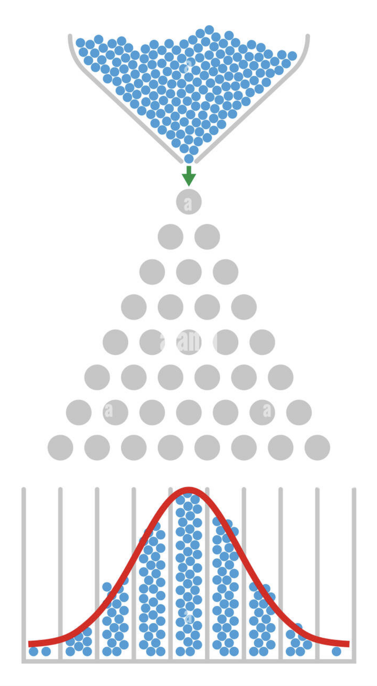

This course provides a rigorous yet accessible introduction to the fundamental concepts of probability and statistics, equipping students with the tools to analyze and interpret data and to reason about uncertainty. Topics include probability rules and counting methods, discrete and continuous random variables, expectation and variance, sampling distributions, and the Central Limit Theorem. Statistical topics cover descriptive statistics, estimation, confidence intervals, correlation, and hypothesis testing. Throughout the course, students will apply theory to real-world problems using analytical methods and computational tools. By the end of the term, students will be able to design basic experiments, interpret data responsibly, and make informed decisions based on probabilistic reasoning.
The following textbook will be used for reading assignments:
D2L: https://d2l.arizona.edu/d2l/home/1719690
Piazza: https://piazza.com/arizona/spring2026/csc196
Gradescope Entry Code: KND5X7
Instructor: Jason Pacheco, Gould-Simpson 707
Instructor: Cesim Erten, Gould-Simpson 845
Teaching Assistants: Yinan Li and Alonso Granados Baca
| Date | Topic | Readings | Assignment |
|---|---|---|---|
| 1/14 | Introduction + Course Overview (slides) | Chapter 1 | |
| 1/19 | MLK Jr. Day - No Classes | ||
| 1/21 | Introduction to Statistics and Data Analysis (slides) (Jupyter Notebook) | HW1 Due 1/28 | |
| 1/26 | Probability (slides) (Jupyter Notebook) | Chapter 2 | |
| 1/28 | Discrete Random Variables and Probability Distributions (slides) | Chapter 3 | HW2 Due 2/04 |
| 2/02 | Discrete Random Variables and Probability Distributions (slides) | ||
| 2/04 | Continuous Probability (slides) | HW3 Due 2/11 | |
| 2/09 | Continuous Probability (slides) | ||
| 2/11 | Mathematical Expectation (slides) | Chapter 4 | HW4 Due 2/18 |
| 2/16 | Mathematical Expectation (slides) | ||
| 2/18 | Some Discrete Probability Distributions (slides) (Jupyter Notebook) | Chapter 5 | |
| 2/23 | Midterm 1 (Study Guide) | ||
| 2/25 | Some Discrete Probability Distributions (slides) (Jupyter Notebook) | HW5 Due 3/04 | |
| 3/02 | Some Continuous Probability Distributions (slides) (annotated slides) | Chapter 6 | |
| 3/04 | Some Continuous Probability Distributions (slides) (annotated slides) | ||
| 3/09 | Spring Break - No Classes | ||
| 3/11 | Spring Break - No Classes | ||
| 3/16 | Some Continuous Probability Distributions (slides) | HW6 Due 3/23 | |
| 3/18 | Fundamental Sampling Distributions and Data Descriptions (slides) (annotated slides) | Chapter 8 | |
| 3/23 | Fundamental Sampling Distributions and Data Descriptions (slides) (annotated slides) | HW7 Due 3/30 | |
| 3/25 | Fundamental Sampling Distributions and Data Descriptions (slides) (annotated slides) | ||
| 3/30 | One- and Two-Sample Estimation Problems | Chapter 9 | HW8 Due 4/06 |
| 4/01 | One- and Two-Sample Estimation Problems | ||
| 4/06 | One- and Two-Sample Estimation Problems | ||
| 4/08 | One- and Two-Sample Tests of Hypotheses | Chapter 10 | |
| 4/13 | Midterm 2 | ||
| 4/15 | One- and Two-Sample Tests of Hypotheses | HW9 Due 4/22 | |
| 4/20 | One- and Two-Sample Tests of Hypotheses | ||
| 4/22 | Bayesian Statistics | Chapter 18 | HW10 Due 4/29 |
| 4/27 | Bayesian Statistics | ||
| 4/29 | Bayesian Statistics | HW11 Due 5/06 | |
| 5/04 | TBD | ||
| 5/06 | TBD | ||
| 5/13 | Course Wrapup |